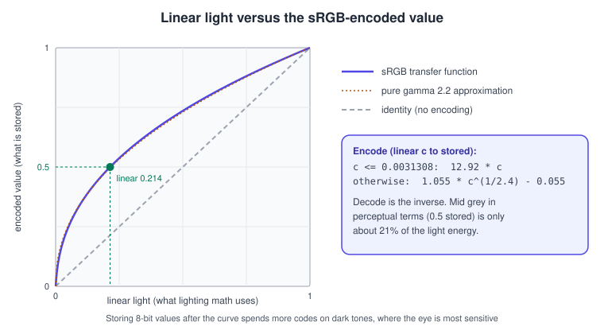
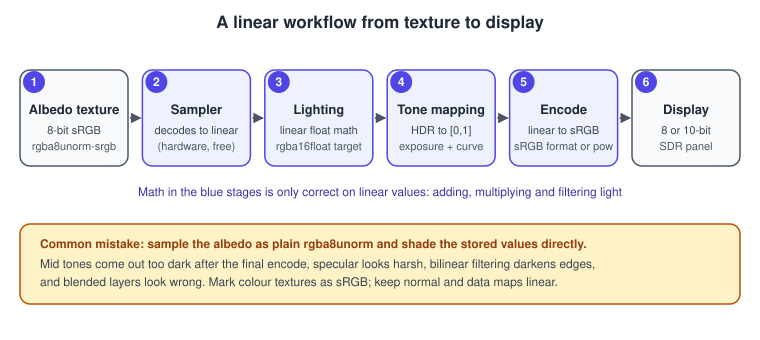
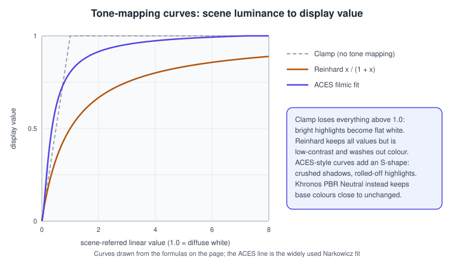

Color Spaces, HDR and Tone Mapping
|
This content was generated with the assistance of AI and should be verified against the official documentation before being relied on in production. |
Almost every wrong-looking real-time image has a colour mistake behind it: lighting that is too dark in the mid tones, specular highlights that are harsh, textures that look washed out, glow that clips to white. This page explains what a colour value in a texture or framebuffer means, why lighting maths must happen on linear values, how a high dynamic range (HDR) image is brought back to a display with tone mapping, and how wide-gamut and HDR displays change the picture. The facts were checked in November 2026. The examples target OpenGL 4.5 and Vulkan 1.3 (C++ and GLSL 4.50), WebGPU (JavaScript and WGSL; Chrome and Edge 113 and later, Firefox 141 and later on Windows, Safari 26) and Metal (Swift on macOS and iOS). No special hardware is needed apart from an HDR display for the HDR output examples.
The running example is the Bookshelf: the book cover and spine textures and the wood texture of bookshelf.glb are stored as sRGB images, the desk lamp’s light is computed in linear units, and the final image is tone mapped for the display.
Why colour needs a transfer function
An 8-bit channel has 256 levels. If those levels were spread evenly over the amount of light, the dark end would show visible banding (the eye notices small steps between dark tones) while the bright end would waste codes on steps nobody can see. Standard colour encodings therefore store a non-linear value: a power-law-like curve is applied to the linear light intensity before it is quantised, which gives dark tones many more codes. The encoding used by the web, by operating systems and by nearly every image file is sRGB (IEC 61966-2-1). Its encode function takes linear light \(c\) to a stored value \(c'\):
\[ c' = \begin{cases} 12.92\,c & c \le 0.0031308 \\ 1.055\,c^{1/2.4} - 0.055 & c > 0.0031308 \end{cases} \]
and decode is the inverse. It is very close to a pure power \(c^{1/2.2}\), which is why people say that sRGB is "gamma 2.2", but the linear segment near black is part of the definition and the difference is visible in dark tones. The same primaries and white point (BT.709 primaries, D65 white) are shared by the HDTV standard and by sRGB.

The consequence for a renderer is simple to state and easy to forget. A value read from a colour texture is encoded. The laws of optics (adding two lights, multiplying a surface colour by a light colour, averaging neighbouring samples for filtering) hold for linear light, not for encoded values. Computing on encoded values gives results that are too dark where colours are mixed and wrong in hue where channels differ. The correct pipeline is therefore:
-
Decode colour textures to linear when they are sampled.
-
Do all lighting, blending and filtering on linear values, in a floating-point or high-precision render target.
-
Tone map the linear scene colour to the display range.
-
Encode to the display’s transfer function when writing to the final image.

Not every texture holds colour. Normal maps, roughness, metallic, ambient occlusion, height and other data textures are linear data and must not be decoded as sRGB. In glTF 2.0 this is a rule of the format: the base colour and emissive textures are sRGB, and all other textures are linear. Mip-map generation also matters: a downsample must average linear values, so generate mips from a texture that is marked sRGB in an sRGB-aware way (the sRGB format makes the hardware do it), or in a shader that decodes first.
sRGB formats: let the hardware do the work
Every modern API has sRGB texture formats whose sampling hardware performs the decode, including the decode before bilinear filtering, and sRGB render-target formats whose blend and write hardware does the encode, after blending. Using them costs nothing and avoids manual conversion in shaders.
| API | Colour texture or render target (sRGB) | Linear data texture |
|---|---|---|
OpenGL |
|
|
Vulkan |
|
|
Metal |
|
|
WebGPU |
|
|
Direct3D 12 (context) |
|
|
Two details cause confusion. First, the alpha channel is never encoded: an sRGB format applies the curve to R, G and B
only. Second, the swapchain has a format of its own: on most platforms, the presentation surface offers both an sRGB and a
plain UNORM format, and selecting the sRGB one gives you automatic encode on write. WebGPU canvases, for example, prefer
bgra8unorm or rgba8unorm as their format and let you add -srgb through the viewFormats list. In desktop OpenGL, the
encode on write of an sRGB-capable framebuffer is only active when GL_FRAMEBUFFER_SRGB is enabled; in OpenGL ES and
WebGL the behaviour depends on the attachment’s format and on the surface, so check the platform documentation.
// OpenGL 4.5: upload the Bookshelf wood texture as an sRGB colour texture and encode on write.
GLuint tex;
glCreateTextures(GL_TEXTURE_2D, 1, &tex);
glTextureStorage2D(tex, /*levels*/ 9, GL_SRGB8_ALPHA8, 256, 256); // 256x256 -> 9 mip levels
glTextureSubImage2D(tex, 0, 0, 0, 256, 256, GL_RGBA, GL_UNSIGNED_BYTE, pixels);
glGenerateTextureMipmap(tex); // the driver averages in linear space for sRGB formats
glEnable(GL_FRAMEBUFFER_SRGB); // writes to an sRGB-capable framebuffer are encoded after blendingIn Vulkan the image format is chosen when the image and its view are created, and the swapchain format is picked from the list the surface reports:
VkSurfaceFormatKHR chooseSurfaceFormat(const std::vector<VkSurfaceFormatKHR>& available)
{
for (const auto& f : available) {
if (f.format == VK_FORMAT_B8G8R8A8_SRGB && f.colorSpace == VK_COLOR_SPACE_SRGB_NONLINEAR_KHR)
return f; // the hardware encodes linear shader output to sRGB when writing
}
return available.front(); // fall back; the shader must then encode manually
}Source: Vulkan: VkColorSpaceKHR
If an sRGB render target is unavailable, for example because the target must be a storage image (which cannot be sRGB), encode in the shader. The functions below are the exact transfer functions and a cheap approximation:
vec3 srgbEncode(vec3 c) // linear -> stored
{
c = clamp(c, 0.0, 1.0);
return mix(12.92 * c, 1.055 * pow(c, vec3(1.0 / 2.4)) - 0.055, step(0.0031308, c));
}
vec3 srgbDecode(vec3 c) // stored -> linear
{
return mix(c / 12.92, pow((c + 0.055) / 1.055, vec3(2.4)), step(0.04045, c));
}
vec3 srgbEncodeFast(vec3 c) { return pow(c, vec3(1.0 / 2.2)); } // close, cheaper, slightly wrong near blackWhere the common errors come from
-
Double encoding: the shader encodes and the target is an sRGB format. The picture looks washed out and too bright.
-
Missing encode: the shader writes linear values to a non-sRGB target. The picture looks too dark and contrasty.
-
Missing decode: a colour texture uploaded as
rgba8unorm. Mid tones are too dark, edges darken when filtered. -
Wrong decode: a normal map or roughness map uploaded as sRGB. Lighting looks subtly wrong and nothing flags it.
-
Vertex colours and shader constants: colours typed as hex values in a colour picker are sRGB; convert them to linear before use (engines do it for colour properties, hand-written shaders do not).
-
Blending in encoded space: an overlay with 50% alpha does not give the right mid value; see Transparency, Blending and Post-processing.
-
UI and text: UI is traditionally composited in encoded space so that anti-aliased text keeps its familiar weight; decide per layer and keep the choice consistent.
High dynamic range
Real scenes contain luminances that differ by many orders of magnitude: a candle, a desk lamp, a window, the sun. A render target that stores values in \([0, 1]\) clips them, and the highlights of the Bookshelf’s lamp become flat white, with no information left for effects such as bloom. A high dynamic range render target stores linear light in floating point, so the lamp can be 20 times brighter than the paper.
Common formats:
-
RGBA16F(half float per channel, 8 bytes per pixel): the default HDR target. Range up to about 65 504, precision of roughly three decimal digits. Supports blending and filtering on every current GPU. -
R11G11B10F(4 bytes per pixel): no alpha, no sign, smaller precision, and about half the bandwidth. Common for the scene colour of mobile and console renderers. -
RGB10A2UNORM: 10 bits per channel, \([0, 1]\), useful as a wide-gamut SDR target or as an encoded intermediate. -
RGBA32F(16 bytes per pixel): rarely needed for colour; useful for accumulation and for compute passes. -
Shared exponent (
RGB9E5): a compact format for filterable HDR textures such as environment maps. -
Logarithmic or LogLuv encodings and RGBM: manual encodings for 8-bit targets, kept for platforms without float targets.
Scene luminance is scene-referred: a value of 1.0 is a chosen "diffuse white", not the display maximum. Exposure then scales the whole image before tone mapping, \(L' = L \cdot 2^{EV}\), where \(EV\) is a camera-style exposure compensation, set by the artist or by auto-exposure computed from a luminance histogram or the log-average of the frame.
Tone mapping
A display reproduces a limited range of luminances (an SDR monitor typically stays near 100 to 300 cd/m²). Tone mapping is the function that maps the scene-referred HDR value to the display range. It is applied per channel or to luminance, after exposure and before the sRGB encode. The common choices:

| Operator | Behaviour |
|---|---|
Clamp |
No operator: values above 1 are cut. Highlights clip, hues shift where only one channel clips. |
Reinhard \(L / (1 + L)\) |
Simple, all values are kept, but it compresses everything including mid tones, so images look flat. The "extended" variant with a white point is a tweak that reaches 1.0 at a chosen input. |
Filmic or ACES fits |
S-shaped curves with a toe (richer shadows) and a shoulder (gradual highlight roll-off). The widely used Narkowicz fit of the ACES reference rendering transform is a one-line rational function; fuller approximations also change saturation. |
Khronos PBR Neutral |
A tone mapper designed for product and commerce viewers: it leaves most base colours close to unchanged (so a red book cover looks like the texture), compresses only the highlights, and desaturates the brightest values gently. |
AgX, Uchimura (Gran Turismo) and similar |
Other filmic curves that appear as options in engines and DCC tools. |
// Exposure, then one of three operators. Input is linear scene-referred colour.
vec3 reinhard(vec3 c) { return c / (1.0 + c); }
// Krzysztof Narkowicz's fit of the ACES curve; input is exposure-adjusted linear colour.
vec3 acesFit(vec3 x)
{
const float a = 2.51, b = 0.03, c = 2.43, d = 0.59, e = 0.14;
return clamp((x * (a * x + b)) / (x * (c * x + d) + e), 0.0, 1.0);
}
// Khronos PBR Neutral tone mapper.
vec3 pbrNeutral(vec3 color)
{
const float startCompression = 0.8 - 0.04;
const float desaturation = 0.15;
float x = min(color.r, min(color.g, color.b));
float offset = x < 0.08 ? x - 6.25 * x * x : 0.04;
color -= offset;
float peak = max(color.r, max(color.g, color.b));
if (peak < startCompression) return color;
const float d = 1.0 - startCompression;
float newPeak = 1.0 - d * d / (peak + d - startCompression);
color *= newPeak / peak;
float g = 1.0 - 1.0 / (desaturation * (peak - newPeak) + 1.0);
return mix(color, newPeak * vec3(1.0), g);
}
void main() // full-screen tone-map pass
{
vec3 hdr = texture(uScene, vUv).rgb * uExposure;
vec3 ldr = acesFit(hdr); // or reinhard(hdr), or pbrNeutral(hdr)
oColor = vec4(srgbEncode(ldr), 1.0); // skip srgbEncode when the target is an sRGB format
}Source: Khronos ToneMapping: PBR Neutral
The tone mapper belongs after effects that need linear HDR input (bloom, depth of field, motion blur) and before effects that assume the display range (colour grading by a lookup table, film grain, FXAA’s luminance edge detection). The order is an important design decision, and one source of the "looks different in engine" problem. Colour grading is usually a 3D lookup table applied after the tone mapper; engines that bake a whole display transform, including the HDR output mapping, into the lookup keep the pipeline simple.
Wide gamut: Display P3 and beyond
sRGB’s primaries cover a limited portion of the colours the eye sees. Display P3, used by Apple devices and many phones and monitors, keeps the sRGB transfer function and the D65 white point but has more saturated red and green primaries, giving a larger gamut. A colour triple has a meaning only together with its colour space: the number (1, 0, 0) is a more saturated red in P3 than in sRGB. Treating P3-encoded values as sRGB (or the reverse) is the wide-gamut equivalent of a missing decode, and shows up as dull or oversaturated colours.
Rendering stays the same: keep working in a linear space with sRGB/BT.709 primaries (many engines) or a larger working space (ACEScg, linear Rec.2020), and convert in the output transform. The shared rule is that a conversion between spaces is a 3 by 3 matrix applied to linear values, so convert to linear, multiply, then encode with the destination’s curve.
The WebGPU canvas lets you declare the colour space and the tone-mapping behaviour of the output explicitly:
const canvas = document.querySelector("canvas");
const context = canvas.getContext("webgpu");
const format = navigator.gpu.getPreferredCanvasFormat(); // "bgra8unorm" or "rgba8unorm"
context.configure({
device,
format,
alphaMode: "opaque",
colorSpace: "display-p3", // "srgb" (default) or "display-p3": how pixel values are interpreted
toneMapping: { mode: "standard" }, // "standard": clamp to the display's SDR range; "extended": allow values above 1.0 (HDR)
});Source: WebGPU: GPUCanvasConfiguration
For HDR output on the web, combine toneMapping: { mode: "extended" } with a float format such as rgba16float, in
which values above 1.0 are displayed brighter than SDR white on an HDR-capable screen and browser. The browser performs the
final mapping to the physical display, so test on the target hardware; the same call on an SDR display clamps.
On Apple platforms the equivalent is configured on the CAMetalLayer:
import QuartzCore
import Metal
func configureHDR(layer: CAMetalLayer) {
layer.pixelFormat = .rgba16Float // float target: values above 1.0 allowed
layer.wantsExtendedDynamicRangeContent = true // opt in to EDR headroom on supported displays
layer.colorspace = CGColorSpace(name: CGColorSpace.extendedLinearDisplayP3) // linear values, P3 primaries
}Source: Apple: CAMetalLayer
On Vulkan, the swapchain colour space is chosen from the surface formats; HDR spaces (HDR10 ST.2084 and scRGB, among
others) need the VK_EXT_swapchain_colorspace instance extension, and mastering metadata can be attached with
VK_EXT_hdr_metadata. On Windows, HDR output uses scRGB (linear Rec.709 primaries in RGBA16F, where 1.0 corresponds to
80 cd/m²) or the HDR10 signal with the PQ transfer function. HDR10 uses the Rec.2020 primaries and the SMPTE ST 2084
(PQ) curve, which is defined in absolute luminance up to 10 000 cd/m². HLG (Hybrid Log-Gamma) is the relative, broadcast
alternative. These standards are specified in ITU-R BT.2100.
// Request an HDR10 swapchain when the surface advertises it (VK_EXT_swapchain_colorspace enabled).
VkSurfaceFormatKHR pickHdr(const std::vector<VkSurfaceFormatKHR>& available)
{
for (const auto& f : available) {
if (f.format == VK_FORMAT_A2B10G10R10_UNORM_PACK32 && f.colorSpace == VK_COLOR_SPACE_HDR10_ST2084_EXT)
return f; // the shader must output Rec.2020 PQ-encoded values
}
for (const auto& f : available) {
if (f.format == VK_FORMAT_R16G16B16A16_SFLOAT && f.colorSpace == VK_COLOR_SPACE_EXTENDED_SRGB_LINEAR_EXT)
return f; // scRGB-style: linear, 1.0 is SDR white, values above are HDR
}
return {VK_FORMAT_UNDEFINED, VK_COLOR_SPACE_SRGB_NONLINEAR_KHR}; // no HDR: use the SDR path
}Performance notes
-
sRGB sampling and encode are done in fixed-function hardware; use the sRGB formats instead of
powin shaders. -
RGBA16Fdoubles the bandwidth of anRGBA8target andR11G11B10Fhalves it again; on mobile GPUs this decides whether a full-resolution HDR pipeline is affordable. -
Compute the auto-exposure histogram at reduced resolution, and smooth the result over time to avoid flicker.
-
Tone mapping is cheap and can be folded into the last pass that already reads the HDR image (a bloom composite or the upscaler).
-
A 3D lookup table (32 by 32 by 32) replaces a long chain of colour maths with one filtered texture read.
What changed recently
-
The W3C WebGPU canvas configuration gained
colorSpaceandtoneMapping, so the display behaviour of a canvas is described rather than assumed; the specification is a W3C Candidate Recommendation Draft and the HDR behaviour depends on the browser and operating system. -
Khronos PBR Neutral (2024) joined glTF-oriented viewers; three.js and Babylon.js ship it among their tone-mapping options. glTF itself describes colour only through the sRGB convention for colour textures and linear values elsewhere.
-
Android, iOS, macOS and Windows all expose HDR output to apps, and Vulkan (
VK_EXT_hdr_metadata) and Metal (EDR) give applications the necessary controls.
Where older books fall short
| Older material | Current practice |
|---|---|
Fixed-function OpenGL (the SuperBible’s early chapters): colours as bytes in the framebuffer, lighting computed on encoded values |
Linear lighting with sRGB texture and framebuffer formats, HDR targets and tone mapping |
Java 3D (Selman’s Java 3D Programming, the Java 3D API specification): colour components as 0 to 1 values with no colour management |
A declared colour space for every texture and output; tone mapping as a pass |
|
|
See it in
OpenGL: Antialiasing and HDR in OpenGL; WebGL: three.js Textures and Colour Management; Metal: Image-Based Lighting and HDR in Metal; Vulkan: Window System Integration and the Swapchain; Unity: URP in Depth; Unreal Engine: Post-Processing and Cameras.